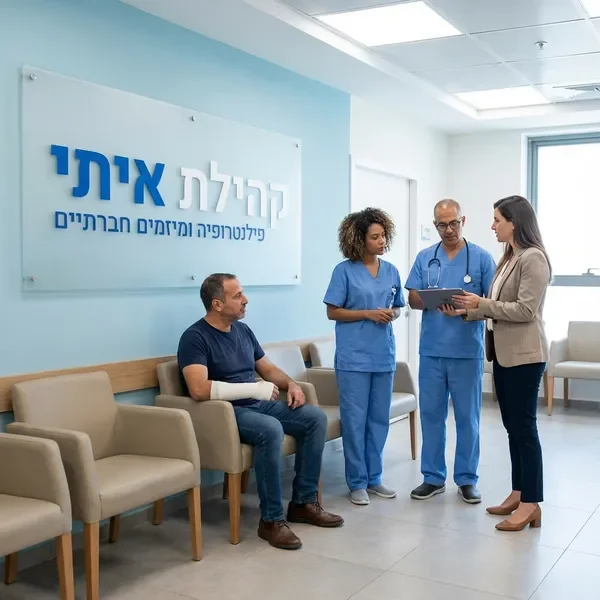
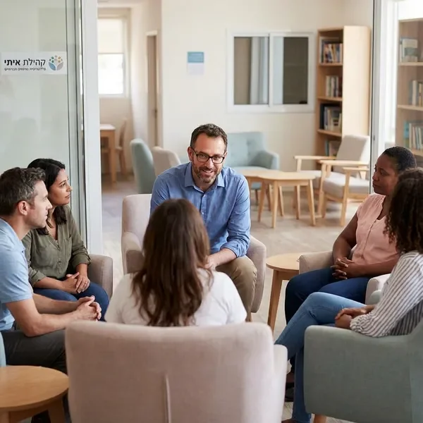
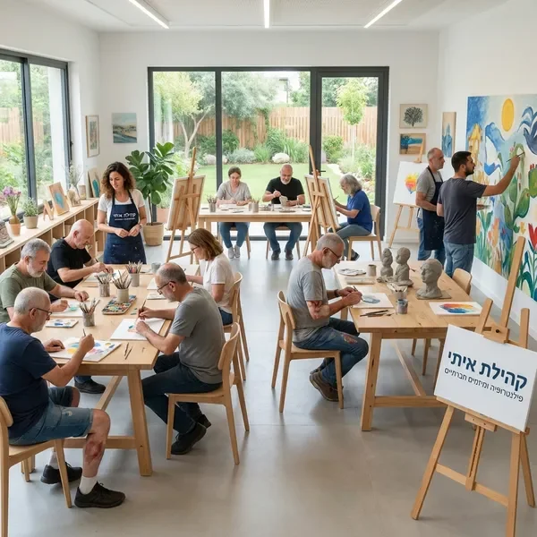
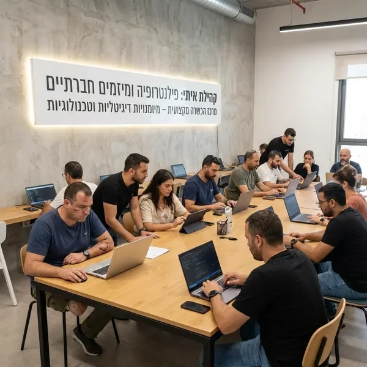
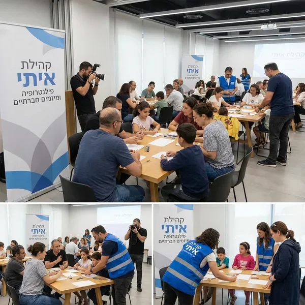
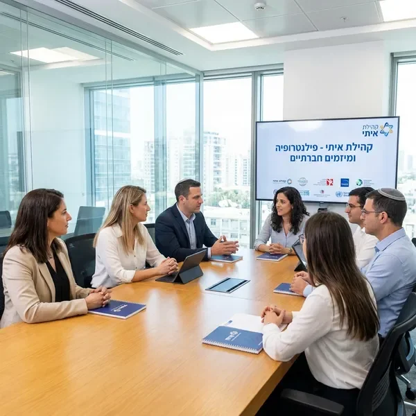
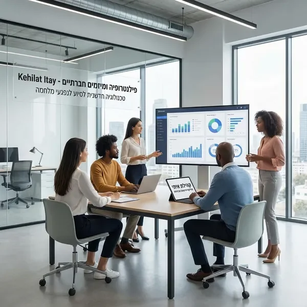

קהילת איתי מובילה מגוון מיזמים חברתיים חדשניים המתמקדים בריפוי כלל נפגעי מלחמה. כל מיזם נבנה בשיתוף פעולה עם קרנות בינלאומיות, ארגונים מקומיים וגופים ציבוריים, ומספק מענה הוליסטי לצרכים המורכבים של נפגעי מלחמה ומשפחותיהם.
המיזמים שלנו משלבים מימון פרויקטים רפואיים וחברתיים עם גישות טיפוליות מתקדמות, תוכניות השתלבות קהילתית ותמיכה רגשית מתמשכת. אנו מאמינים שריפוי אמיתי מגיע דרך גישה רב-ממדית המתייחסת לאדם כולו - גוף, נפש ורוח.

המיזם הרפואי שלנו מספק טיפולים רפואיים מתקדמים לנפגעי מלחמה, כולל ניתוחים שיקומיים, פיזיותרפיה אינטנסיבית וטיפולים רפואיים משלימים. אנו עובדים עם בתי חולים מובילים בישראל ובעולם כדי להבטיח שכל נפגע מקבל את הטיפול המתאים ביותר לצרכיו.
קרן הפילנטרופיה לנפגעי מלחמה בישראל שלנו מממנת טיפולים שאינם מכוסים על ידי קופות החולים, כולל טיפולים חדשניים בחו"ל, שיקום ממושך וטכנולוגיות רפואיות מתקדמות. כל תוכנית טיפול מותאמת אישית ומלווה על ידי צוות רפואי מקצועי.

הטראומה הנפשית והרגשית של נפגעי מלחמה דורשת טיפול ממושך ומקצועי. המיזם שלנו מספק טיפול פסיכולוגי אישי וקבוצתי, טיפול בטראומה, טיפול משפחתי וקבוצות תמיכה. אנו משתמשים בשיטות טיפוליות מוכחות כמו EMDR, CBT וטיפול בעזרת אומנות.
השותפות שלנו עם קרן בינלאומית לפרויקטים חברתיים מאפשרת לנו להביא מומחים מהארץ ומהעולם, לספק הכשרה מתמשכת למטפלים ולפתח תוכניות טיפול חדשניות. כל משתתף מקבל תוכנית טיפול מותאמת אישית שמתחשבת בצרכיו הייחודיים.

האומנות והמוזיקה הן כלים טיפוליים עוצמתיים לעיבוד טראומה והבעה רגשית. המיזם שלנו מציע סדנאות אומנות, טיפול במוזיקה, תיאטרון טיפולי ותנועה מודעת. הפעילויות מנוהלות על ידי מטפלים מוסמכים ומאפשרות למשתתפים לבטא רגשות שקשה לבטא במילים.
התוכניות שלנו כוללות סדנאות ציור וצילום, הרכבי מוזיקה, כתיבה יצירתית ופסל. כל פעילות מתוכננת כך שתספק מרחב בטוח לביטוי עצמי, חיזוק הביטחון העצמי ובניית קשרים חברתיים חדשים.

מימון פרויקטים רפואיים וחברתיים כולל גם תוכניות השתלבות תעסוקתית מקיפות. אנו מספקים הכשרה מקצועית במגוון תחומים, ליווי אישי בחיפוש עבודה, סדנאות כתיבת קורות חיים וריאיונות עבודה, ותמיכה בפתיחת עסקים עצמאיים.
השותפות שלנו עם חברות וארגונים מאפשרת לנו להציע הזדמנויות תעסוקה אמיתיות, התמחויות ותוכניות הכשרה מקצועית בתחומים מבוקשים. כל משתתף מקבל תוכנית אישית המותאמת ליכולותיו, תחומי העניין שלו והצרכים שלו.

הקהילה היא חלק מרכזי בתהליך הריפוי. אנו מארגנים מגוון פעילויות קהילתיות כמו מפגשים חברתיים, טיולים, חגיגות, ימי ספורט ופעילויות משפחתיות. הפעילויות מאפשרות למשתתפים לבנות קשרים חברתיים חדשים, לחוות רגעים של שמחה ולהרגיש חלק מקהילה תומכת.
קרן הפילנטרופיה לנפגעי מלחמה בישראל שלנו מממנת גם מחנות קיץ למשפחות, סדנאות הורות, קבוצות תמיכה למשפחות ופעילויות לילדים ובני נוער. אנו מאמינים שריפוי המשפחה כולה הוא חלק בלתי נפרד מהריפוי האישי.

שותפות עם קרן בינלאומית לפרויקטים חברתיים היא אבן הפינה של העבודה שלנו. אנו משתפים פעולה עם קרנות פילנטרופיות בינלאומיות, ארגונים לא ממשלתיים, אוניברסיטאות ומכוני מחקר ברחבי העולם. השותפויות הללו מביאות לנו גישה לידע מתקדם, טכנולוגיות חדשניות ומשאבים נוספים.
אנו גם שותפים בפרויקטים מחקריים בינלאומיים, מארחים מומחים מחו"ל ושולחים את הצוות שלנו להכשרות ולכנסים בעולם. הגישה הגלובלית שלנו מאפשרת לנו להציע את הטיפולים והתוכניות המתקדמים ביותר לנפגעי המלחמה בישראל.

אנו משקיעים בפיתוח פתרונות טכנולוגיים חדשניים לסיוע לנפגעי מלחמה. זה כולל אפליקציות לניהול טיפולים, פלטפורמות דיגיטליות לקבוצות תמיכה מקוונות, כלים לטיפול מרחוק וטכנולוגיות עזר לנפגעים עם מוגבלויות פיזיות.
מימון פרויקטים רפואיים וחברתיים שלנו כולל גם מחקר ופיתוח של שיטות טיפול חדשות, שיתוף פעולה עם חברות הייטק ופיתוח מוצרים ושירותים שישפרו את איכות החיים של נפגעי מלחמה. אנו מאמינים שטכנולוגיה יכולה להיות כלי רב עוצמה לריפוי והתחדשות.
קהילת איתי מאמינה בגישה הוליסטית לריפוי נפגעי מלחמה. אנו מבינים שכל נפגע הוא אדם שלם עם צרכים פיזיים, נפשיים, רגשיים וחברתיים. לכן, כל תוכנית טיפול שאנו מציעים משלבת מספר מיזמים ומותאמת אישית לצרכים הייחודיים של כל משתתף.
כל משתתף עובר הערכה מקיפה על ידי צוות רב-תחומי הכולל רופאים, פסיכולוגים, עובדים סוציאליים ומטפלים. ההערכה בוחנת את המצב הפיזי, הנפשי, הרגשי והחברתי ומזהה את הצרכים והיעדים העיקריים.
על בסיס ההערכה, אנו בונים תוכנית טיפול אישית המשלבת מספר מיזמים. התוכנית כוללת יעדים ברורים, לוחות זמנים ואבני דרך למעקב אחר ההתקדמות. כל תוכנית מתעדכנת באופן שוטף בהתאם להתקדמות המשתתף.
כל משתתף מקבל ליווי אישי מתמשך מצד מנהל מקרה ייעודי. מנהל המקרה מתאם בין המיזמים השונים, מוודא שהמשתתף מקבל את כל השירותים הדרושים ומספק תמיכה רגשית ומעשית לאורך כל התהליך.
אנו עורכים הערכות תקופתיות כדי לעקוב אחר ההתקדמות ולהתאים את התוכנית לפי הצורך. ההערכות כוללות מדדים אובייקטיביים כמו שיפור תפקודי ומדדים סובייקטיביים כמו שביעות רצון ותחושת רווחה.
קרן הפילנטרופיה לנפגעי מלחמה בישראל שלנו מממנת מגוון רחב של פרויקטים רפואיים וחברתיים. המימון מגיע ממספר מקורות: תרומות פרטיות, קרנות בינלאומיות, חברות ותאגידים, ומענקים ממשלתיים.
מימון ניתוחים, טיפולים, שיקום, תרופות וציוד רפואי שאינם מכוסים על ידי קופות החולים.
מימון טיפולים פסיכולוגיים ארוכי טווח, טיפולים משפחתיים וקבוצות תמיכה.
מימון קורסים מקצועיים, השכלה גבוהה, הכשרות והתמחויות לנפגעי מלחמה.
מימון שיפוצים והתאמות בית, ציוד נגישות וסיוע בדיור לנפגעים ומשפחותיהם.
בין אם אתם ארגון המעוניין בשותפות עם קרן בינלאומית לפרויקטים חברתיים, חברה המעוניינת לתמוך במיזמים שלנו, או נפגע מלחמה המחפש תמיכה - נשמח לשמוע מכם.
צרו קשר